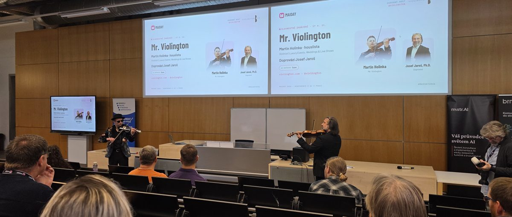
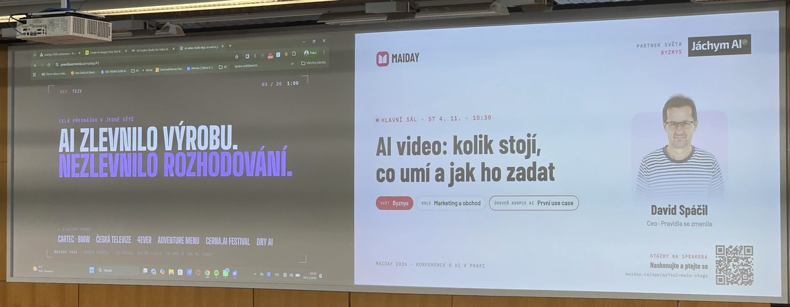
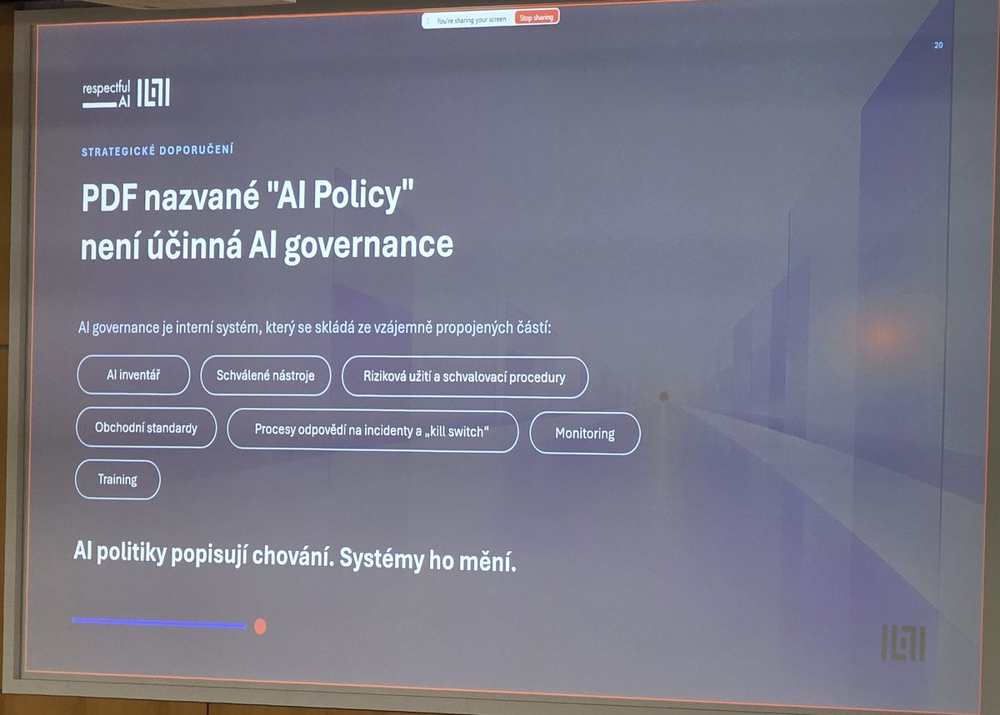
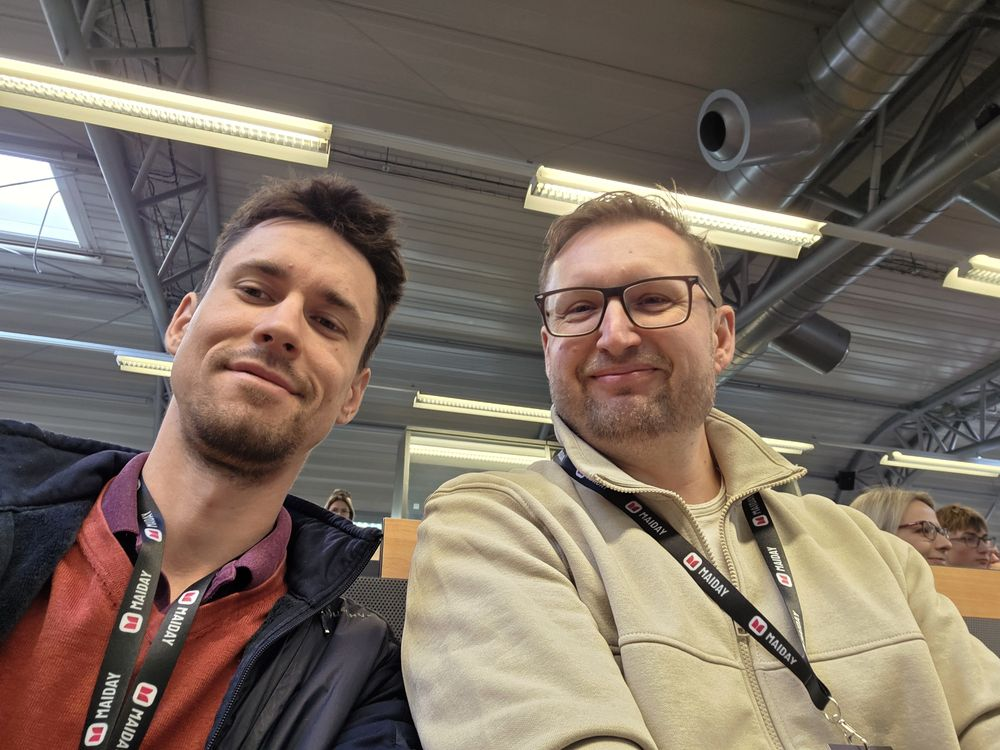

Ajťák a soudce na jednom pódiu: co jsem si odnesl z Maiday 2026

Na slidu Davida Špáčila stálo: „AI zlevnilo výrobu. Nezlevnilo rozhodování.“ Dvě přednášky, které jsem si ze středečního dopoledne na Maiday odnesl nejvíc, tu větu potvrdily každá z úplně jiného konce. Jednu měl člověk, který AI zavádí do firem. Druhou místopředseda Vrchního soudu v Praze.
První ročník konference Maiday proběhl 4. a 5. listopadu na Mendelově univerzitě v Brně. Program byl rozdělený do tří oblastí (byznys, věda a vzdělávání, veřejný sektor) a u každé přednášky bylo vidět, pro jakou úroveň zavádění AI je určená. Zahájil ji houslista Martin Holinka alias Mr. Violington s Josefem Jarošem. Doprovod jim vygeneroval Suno, na pódiu ale pořád stáli dva lidé s houslemi. Dobrý úvod do dne, který se celý točil kolem toho, kde má člověk zůstat.

Proč nestačí dát Honzovi licenci?
Václav Adamec z brněnské Gauss Algorithmic, která se AI věnuje od roku 2013, začal dvěma zaměstnanci výrobní firmy. Petr pracuje s drahým obráběcím strojem a nikoho by nenapadlo pustit ho k němu bez školení. Honza dostal licenci na AI a k tomu větu „nějak se s tím poraď“. A tak nechá jazykový model psát programy pro CNC stroj. Tolerance se tam počítá v tisícinách milimetru, firemní názvy nástrojů model nikdy neviděl a chyba tady nestojí jeden backspace, ale klidně celý stroj.
Adamec má na hrnku přepsané známé heslo. Místo „další meeting, který mohl být e-mail“ tam stojí „další agent, který mohl být jen skript“. Přidal k tomu příběh z velké telekomunikační firmy: kolega se pochlubil multiagentní platformou s osmi agenty a ukázalo se, že sedm z nich mohly být obyčejné skripty.
Na co se zeptat, než AI zavedete?
Za nejdůležitější slide celé přednášky označil čtyři otázky. Ta první zní, jestli procesu opravdu rozumím. Adamec doporučuje sednout si na den vedle kolegy a dívat se, co dělá. Ve firemním systému je totiž v sedmém kroku automatický překlad, který stojí za nic, a Pepa ho proto potichu přepisuje v DeepL. Zvenku to nikdo neví. Když se pak proces zautomatizuje podle papíru, začnou chodit stížnosti zákazníků.
Druhá otázka je, jestli na to máme data. Ve výrobních firmách bývá samotná výroba vymydlená, ale nabídky, obchod a konstrukce jsou podle Adamce „pravěk“ excelů a papírů. Třetí je, jestli víme, co to ušetří. Měřítkem přitom nemusí být peníze. Může jím být i přetížený technolog, kterému automatizace vezme hodinu nenáviděné práce denně a který díky tomu za dva měsíce neodejde. Čtvrtá zní, jestli na to máme kapacitu: projekt potřebuje vlastníka, ne jen nadšeného ajťáka, a ředitele, který AI sám používá. A nakonec ta nejnepříjemnější: musí to být AI?
Na projekty, které tímhle sítem projdou, pak Adamec doporučuje matici dopad × náročnost. Začít se má rychlými výhrami, ne strategickými projekty. Jak řekl: „Slona porcujte od ocasu.“
Tady se do toho vložím jako právník. Pepův DeepL je učebnicový příklad shadow AI: firemní a klientské texty odcházejí do nástroje, o jehož podmínkách firma nic neví. A otázka „musí to být AI?“ má i regulatorní rozměr. Systém, který jen provádí pravidla napsaná člověkem, podle AI Act zpravidla vůbec není systémem AI (bod 12 odůvodnění). Skript je tak nejen levnější, ale i právně jednodušší.
Proč chtít havarovat brzy?
Druhá polovina přednášky patřila zásadě „havarujte levně a rychle“. Tým Gauss Algorithmic stavěl voicebota pro samoobslužná okénka francouzského Burger Kingu. První verze byla hotová rychle a u klienta fungovala skvěle. V reálném provozu brzy havarovala. K okénku přijelo auto s rodinou, táta objednal menu, dcera ze zadního sedadla chtěla jiné hranolky než sestra, do toho foukal vítr a troubila auta. A lidé, kteří zjistí, že mluví s AI, začnou zkoušet blbosti. Neselhal model, ale vstup: jeden mikrofon, který bral zvuk z celého okolí. Dotáhnout projekt do stavu, jaký chtěl klient, trvalo ještě dlouho. Podle Adamce se ale vyplatilo, že havárie přišla brzy a levně.
A co na to justice?
Hned po něm vystoupil JUDr. Roman Horáček, Ph.D., místopředseda Vrchního soudu v Praze a zakladatel Centra pro digitalizaci a umělou inteligenci v justici (CendAI). Začal střízlivě. Justice ještě nedávno řešila, aby vůbec fungovala spisová služba, a výstupy soudů jsou pořád hlavně papírové. Jako advokát jsem se usmál u CD-ROMu se spisem, který dnes v kanceláři nemám v čem přehrát.
Nejčastější dotaz do chatbotu v justiční síti byl prý „napiš mi rozsudek“. A právě tomu se tým snaží zabránit. Horáček ukázal systém iSoud, který spis nejdřív lokálně pseudonymizuje, pak ho shrne, dohledá judikaturu a připraví podklady pro rozhodnutí. Nejzajímavější byl příběh první verze. Ta připravovala rovnou celé rozhodnutí a testující soudci ho podle Horáčka „prostě převzali“. Bylo hezké, kvalitně zpracované, plné judikatury. Tým proto logiku otočil. Soudce teď po shrnutí musí sám rozhodnout, jestli chce žalobě vyhovět, nebo ji zamítnout. Výstup je záměrně v bodech, aby nešel jen překopírovat. A ke zvolené variantě systém sám přidá protiargumenty, tedy co by mohlo neobstát v odvolání. Podle Horáčka by systém mohl uvolnit kapacitu zhruba jednoho okresního soudu a do ostrého provozu jít v řádu měsíců.
Zazněla i nepříjemná témata. Laická veřejnost podle Horáčka často volí stroj místo soudce, protože si myslí, že stroj je transparentní a předvídatelný. „To právě vůbec není pravda,“ odpověděl. Dál mluvil o deepfake důkazech, u kterých podle znalců dnes umíme úpravu odhalit jen omezeně, a o firmách, které nabízejí profilování osobnosti soudců. Ve Francii je to podle něj trestné. CendAI vede i veřejný přehled AI halucinací v soudních řízeních. Souvislostem jsem se věnoval v článku AI před soudem.
Kde se ty dvě přednášky potkaly?

Honza ve výrobní firmě i soudci-testeři udělali přesně totéž: převzali výstup AI, protože vypadal dobře. AI Act má pro to i odborný pojem, automation bias. U vysoce rizikových systémů musí být lidský dohled navržený tak, aby si člověk tuhle tendenci uvědomoval (čl. 14 odst. 4 písm. b)). Systém, který soudci pomáhá zjišťovat a vykládat fakta a právo, mezi vysoce rizikové systémy patří (příloha III bod 8). Po nařízení Digital Omnibus se tyto povinnosti posouvají na prosinec 2027. Horáčkův tým tedy staví lidský dohled do systému dřív, než to bude povinné, a nestaví ho do směrnice, ale přímo do designu aplikace.
Tím se dostávám ke třetímu slidu, který jsem si ten den vyfotil. Alžběta Solarczyk Krausová na přednášce „Máte AI skutečně pod kontrolou?“ ukázala: „PDF nazvané AI Policy není účinná AI governance. AI politiky popisují chování. Systémy ho mění.“ iSoud je přesně ten případ. Soudci nikdo nemusí kázat, ať výstup nekopíruje, protože mu to aplikace neumožní.

AI politiky popisují chování. Systémy ho mění.
Jedna právní poznámka na okraj. iSoud posílá pseudonymizovaný text přes API k modelu Claude, tedy do USA. Pseudonymizace je dobrý krok, ale pro toho, kdo drží klíč, zůstávají data osobními údaji. Zda jsou osobními údaji i pro poskytovatele modelu, záleží podle Soudního dvora EU (C-413/23 P) na tom, jestli je reálně dokáže přiřadit ke konkrétním lidem. Horáček sám přiznal, že pseudonymizace není stoprocentní. I proto považuju za správné, že systém v nejistých případech vyzve soudce ke kontrole, než text odešle dál.
Co si z toho odnést do firmy?
Odnáším si dvě jednoduché otázky. Kolik výstupů AI se u vás jen překopíruje dál, protože vypadají dobře? A kolik vašich „agentů“ mohl být obyčejný skript?

Chystáte se zavádět AI ve firmě a chcete mít jasno ve smlouvách, datech a odpovědnosti? Úvodních 30 minut konzultace je zdarma a lidskou řečí.
Domluvit konzultaciZdroje a doporučené čtení:
- Lupa.cz: V řádu měsíců by v Česku mohl začít fungovat nový AI systém pro soudce (12. 10. 2026)
- Lupa.cz: Roman Horáček (Vrchní soud): AI ohrožuje důvěru v justici (29. 5. 2026)
- CendAI: přehled AI halucinací v soudních řízeních
- Nařízení (EU) 2024/1689 o umělé inteligenci (AI Act), čl. 14 a příloha III (EUR-Lex)
- Nařízení (EU) 2026/1744 (Digital Omnibus k AI) (EUR-Lex)
- Rozsudek SDEU ze dne 4. 9. 2025, EDPS v. SRB, C-413/23 P (Curia)